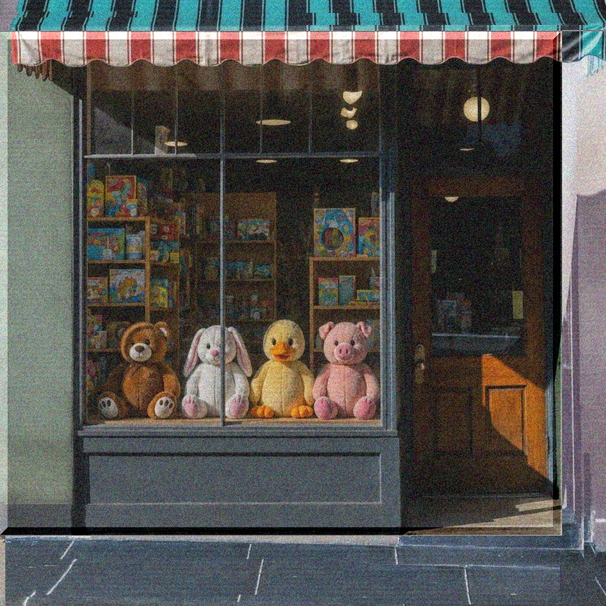

lullaby 404
lyrics
404notfound
thanks
to more and more
あとがき
昔、8トラックのハードディスクレコーダとSP303でDJごっこしてミックステープ作ったりして遊んでた。今ならPCでサクサクっとできるかもだけどね。（僕はサクサクできない。）
で、その頃のやつを聞き直したりすると、まあ粗いんだけど自分にとっては懐かしさ補正もあってね。
中には忘れかけてた曲とかも入ってて。誰かから借りたり、また誰かのミックスに入ってたやつとかだったんだろうけど。アーティスト名も曲名も全然覚えてなくて。
だから、気になった曲をShazamでふと探してみたんだけど、全然引っかからないの。ネットで歌詞（うろ覚えというか聞いたまんま）いれて検索しても出てこない。
そんとき、自分でもビックリしたのがなんでもネットにあると思ってた自分にだよ。ネットにないものの方が世の中には多いのに、なんでもネットにあると思いこまされてた。
今回の歌詞は、そんときに探した誰かの歌詞の集まりだから、僕が書いたものではないんだ。しいて言うなら僕が聴こえてた歌詞。
だから今回の歌詞欄は
404notfound
thanks
to more and more
とした。
本当にありがとう。